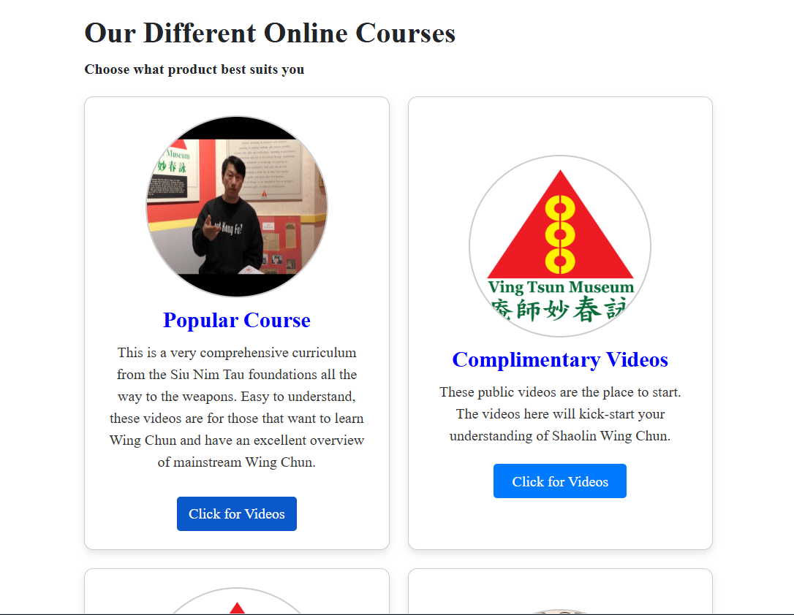
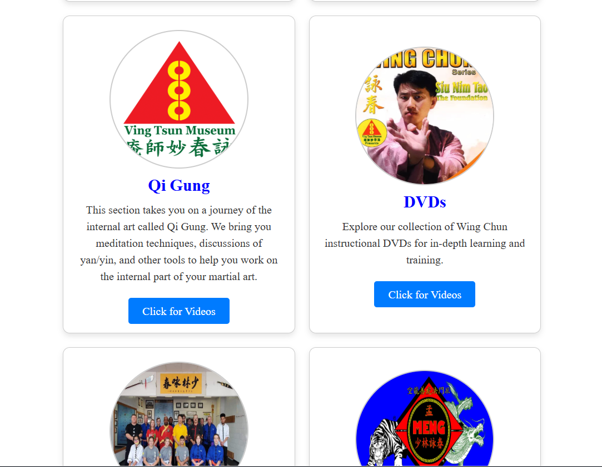
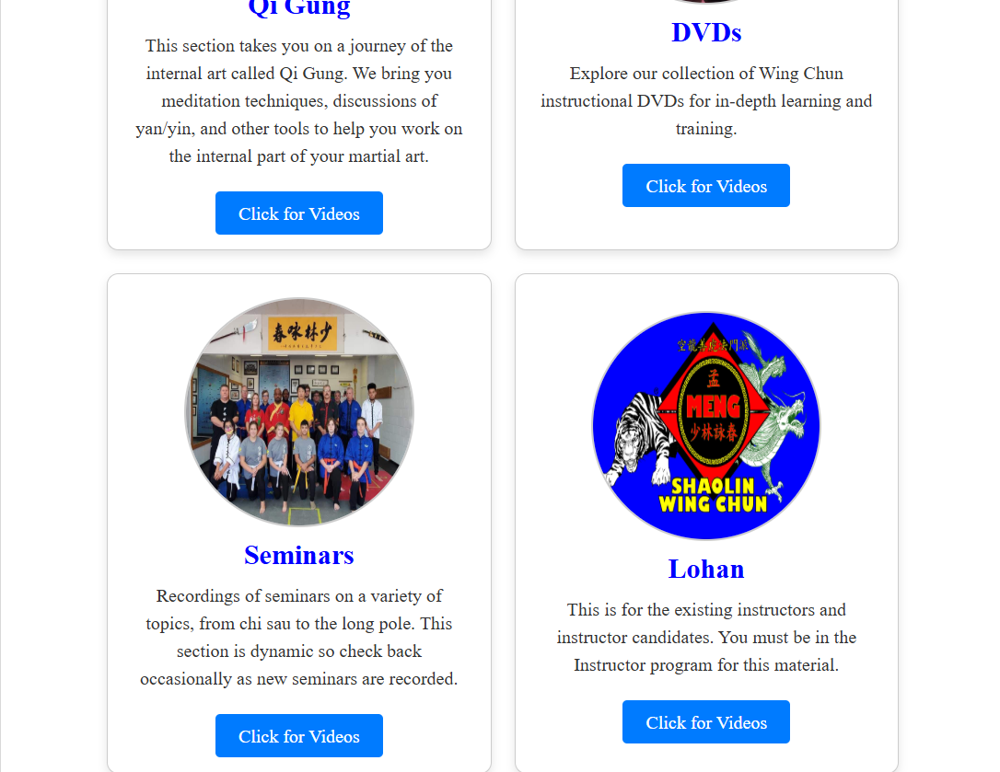
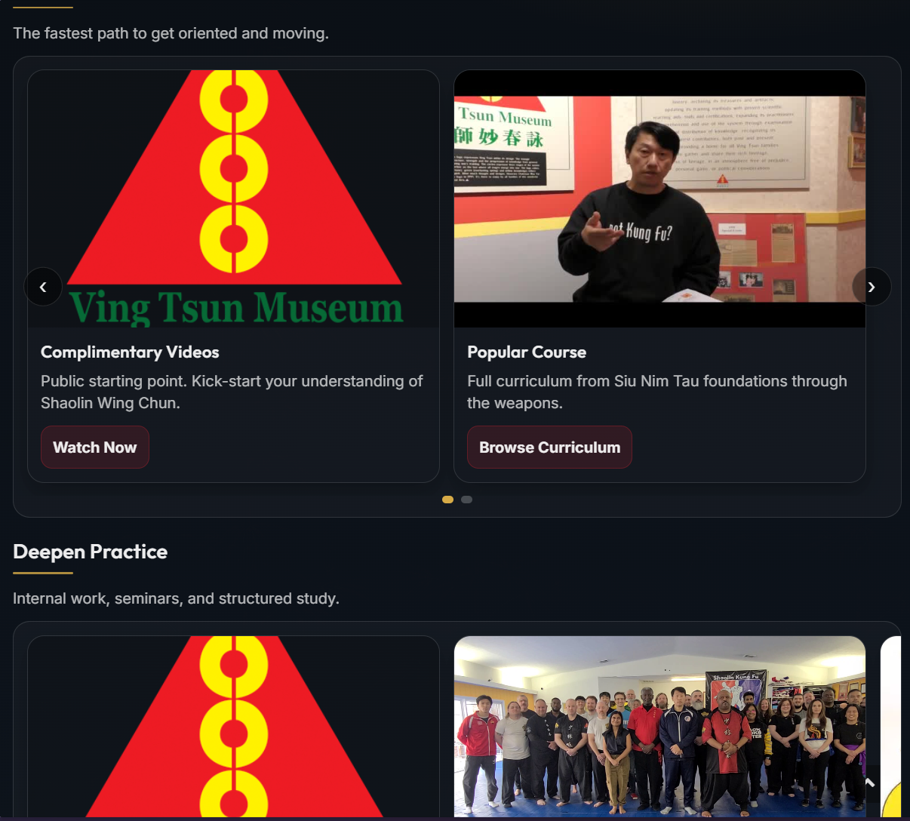
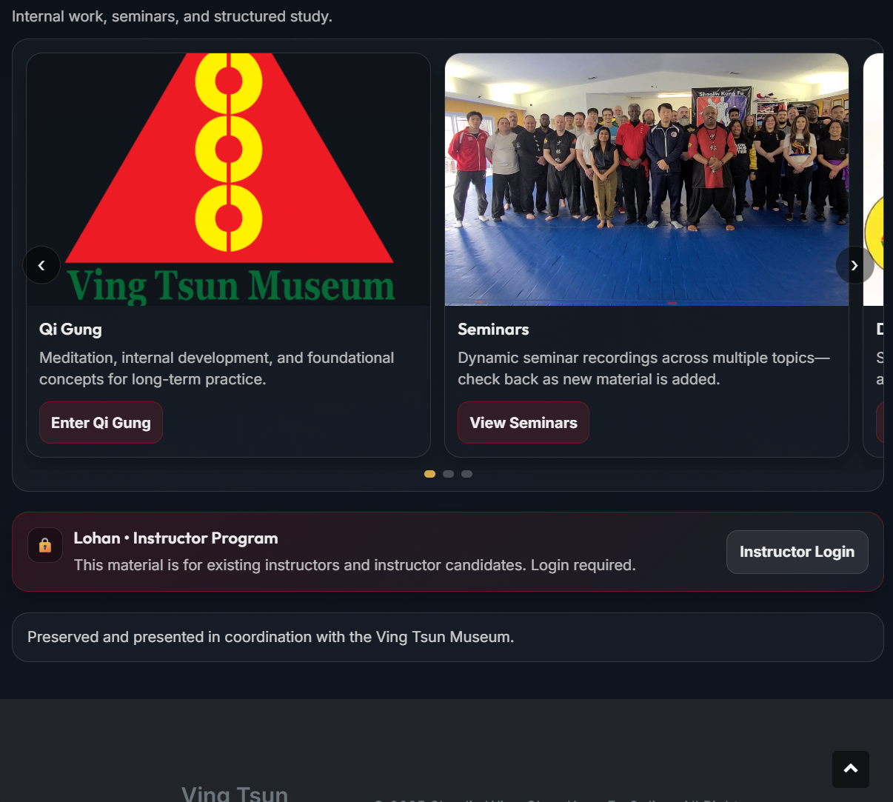

Case Study
Wing Chun Kung Fu Online
This project focused on modernizing an existing Joomla site by cleaning up the page structure, improving responsive behavior, and making the online course presentation easier to scan and maintain.
Project Focus
What changed
Layout
Reworked course presentation into a cleaner card-driven structure with more consistent spacing and alignment.
Responsiveness
Improved how content scales and stacks so the site reads more cleanly across desktop and smaller screens.
Maintainability
Used a more organized structure so future updates and additions are easier to follow and extend.
Before
Original presentation



After
Current presentation

